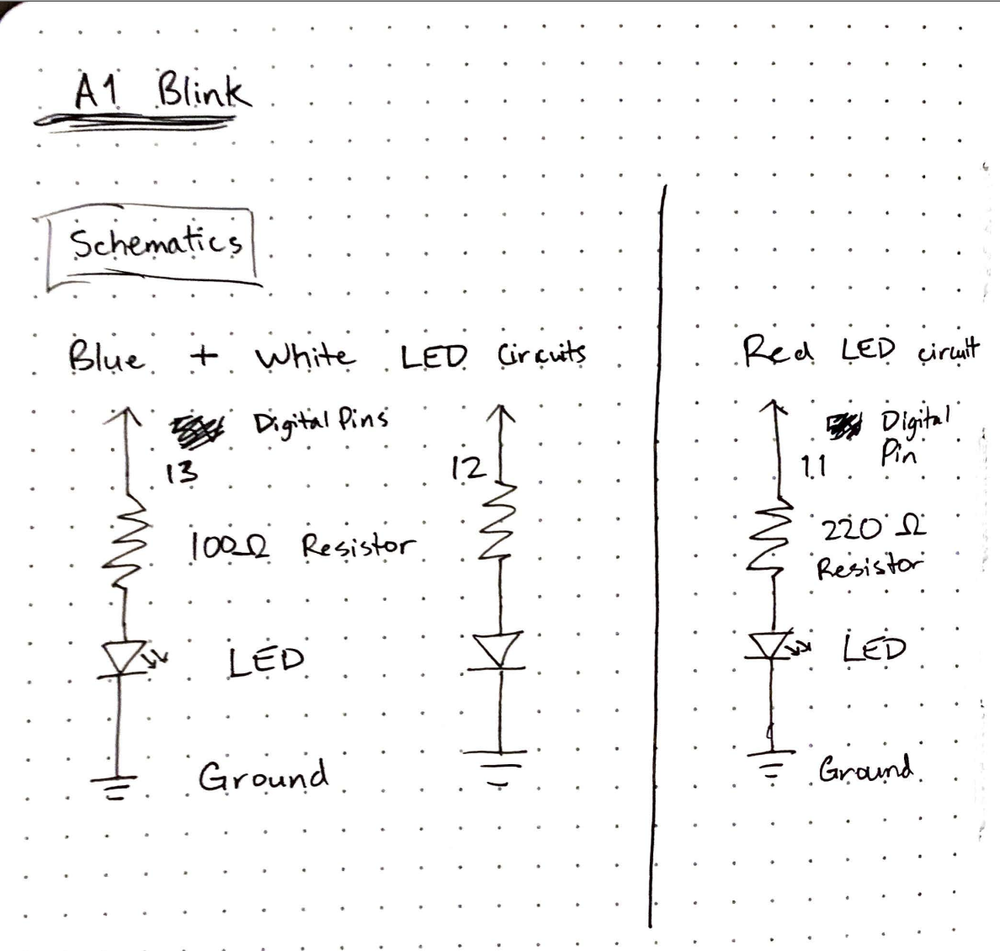
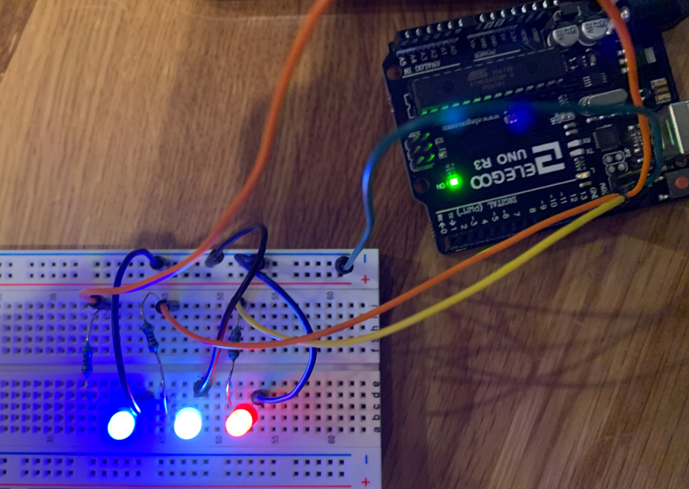

A1 - Blink
Design Requirements
- The circuit must contain 3 LEDs or more. The choice of LEDs is up to you.
- You must limit the current flowing through the LEDs using resistors. You should calculate an appropriate resistance to use.
- Your Arduino code should make each LED blink. Each LED should be able to blink independently.
- Within your code, for each line of code with content (i.e. not lines of code which are only white space, a curly brace, etc), add a short comment (// like this) above the line of code explaining what the line does.
Schematic and Circuit
Here is a schematic of my circuit (left) and my circuit board (right). I chose to use a blue, white, and red LED to recreate a police light bar. Each circuit has its own current and digital pin. The blue and white LEDs have a 100ohms resistor while the red has a 220ohms resistor. I chose these values after calculating the recommended resistance for a 20mA current through the different LEDS considering their voltage drop with a 5V voltage.
 Code Snippet
int blue = 13; // create a variable for the blue LED's output
int white = 12; // create a variable for the white LED's output
int red = 11; // create a variable for the red LED's output
int timer = 0; // create a variable for the timer
bool swap = true; // create a boolean variable
// the setup function runs once when you press reset or power the board
void setup() {
// initialize digital pin LED_BUILTIN as an output.
pinMode(blue, OUTPUT);
pinMode(white, OUTPUT);
pinMode(red, OUTPUT);
}
// the loop function runs over and over again forever
void loop() {
digitalWrite(blue, HIGH); // turn the LED on (HIGH is the voltage level)
delay(50); // wait for a second
digitalWrite(blue, LOW); // turn the LED off by making the voltage LOW
delay(50); // wait for a second
digitalWrite(white, HIGH); // turn the LED on (HIGH is the voltage level)
delay(50); // wait for a second
digitalWrite(white, LOW); // turn the LED off by making the voltage LOW
delay(50); // wait for a second
digitalWrite(red, HIGH); // turn the LED on (HIGH is the voltage level)
delay(50); // wait for a second
digitalWrite(red, LOW); // turn the LED off by making the voltage LOW
delay(50); // wait for a second
if (timer < 5) { // Checks if the timer is less than 5
timer++; // increments the timer by 1
} else if (swap) { // else if the boolean is true
timer = 0; // reset the timer
blue = red; // swap the blue LED output with the red LED output
red = 13;
swap = false; // change the boolean to false
} else { // if the boolean is false
timer = 0; // reset the timer
blue = red; // swap back the outputs to original
red = 11;
swap = true; // reset the boolean
}
}Demo
Here is a gif and video of my circuit and LEDs blinking in action!